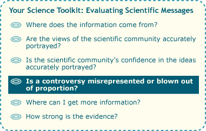
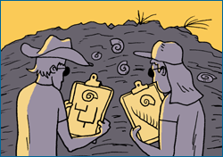
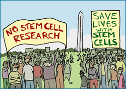
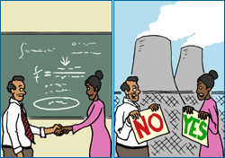
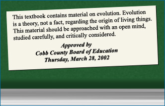

Here's a headline unlikely to run in any paper: Senate getting along: No fights or arguments for days! That's because good news is generally no news. Clashes, on the other hand, are exciting and often important. So it's not surprising then that media reports on science often focus on controversy. However, when a scientific idea is portrayed as controversial in the popular media or in a policy, that conflict might be one of a few different types, which stem from different sources:
- Fundamental scientific controversy— scientists disagreeing about a central hypothesis or theory. If you imagine scientific knowledge as a web of interconnected ideas, theories and hypotheses are at the center of the web and are connected to many, many other ideas — so a controversy over one of these principal ideas has the potential to shake up the state of scientific knowledge. For example, physicists are currently in disagreement over the basic validity of string theory, the set of key ideas that have been billed as the next big leap forward in theoretical physics. This is a fundamental scientific controversy.

- Secondary scientific controversy— scientists disagreeing about a less central aspect of a scientific idea. For example, evolutionary biologists have different views on the importance of punctuated equilibrium (a pattern of evolutionary change, characterized by rapid evolution interrupted by many years of constancy). This controversy focuses on an important aspect of the mode and rate of evolutionary change, but a change in scientists' acceptance of punctuated equilibrium would not shake evolutionary biology to its core. Scientists on both sides of the punctuated equilibrium issue accept the same basic tenets of evolutionary theory.

- Conflict over ethicality of methods— disagreement within the scientific community or society at large over the appropriateness of a method used for scientific research. For example, many people have concerns over the ethicality of stem cell research that relies on human embryonic stem cells. These cells are gathered from fertilized eggs a few days old, which are donated by couples undergoing in vitro fertilization and who cannot use those eggs. Such concerns do not represent conflict over scientific knowledge, but over what constitutes ethical means for building that knowledge.

- Conflict over applications— conflict over the application of scientific knowledge. For example, activists sometimes clash over the issue of nuclear energy plants and whether or not they are a safe and environmentally sound means of producing energy. Although there are honest scientific controversies on issues relating to nuclear reactions, this is not one of them. This is not a conflict over a scientific idea, but over how such ideas should be applied.
- Conflict between scientific idea and non-scientific viewpoint.For example, scientific evidence supports the view that the Earth is about 4.5 billion years old; however, some groups reject this view in favor of a young Earth, created just a few thousand years ago. This is a conflict over scientific knowledge, but not one within the scientific community.
True scientific controversy (the first two sorts listed above) is healthy and involves disagreements over how data should be interpreted, over which ideas are best supported by the available evidence, and over which ideas are worth investigating further. This sort of catalyst sparks careful examination of the data and additional research and so can help science move forward. However, other sorts of controversy can impact science in different ways. Conflicts between scientific ideas and non-scientific viewpoints, for example, can hinder science if the controversy shuts down research in contested areas.
Furthermore, mistaking one form of controversy for another could easily lead one astray about the science at stake. For example, our sample article on global warming refers to "the so-called 'global warming' debate," but what is the nature of this debate? As reflected by the reports from the Intergovernmental Panel on Climate Change, the global scientific community is largely in agreement that global warming is occurring and that human activities are to blame — so this so-called debate is not a fundamental scientific controversy. However, there are many smaller details of climate change (how fast it is occurring, how best to model it, etc.) that are actively being researched and discussed — so the debate is an example of a secondary scientific controversy.
COUNTERFEITING CONTROVERSY

Evolution provides an example of a conflict between a scientific idea and a non-scientific viewpoint. Biologists overwhelmingly agree that life has diversified through evolutionary processes over billions of years. Because of this scientific consensus, there is no fundamental scientific controversy over evolution. However, as with any area of scientific research, secondary scientific controversies (in this case, over the pace of evolutionary change, the frequency of different modes of speciation, etc.) continually arise as research progresses and scientists test new ideas against evidence. Unfortunately, groups against teaching evolution in schools sometimes take advantage of these secondary controversies, trumping them up as fundamental controversies and falsely presenting them as indicators of a "theory in crisis." Even more unfortunately, this misrepresentation has contributed to a social controversy over what ideas should be taught in our science classrooms, with the anti-evolutionists arguing for the inclusion of what they term alternative viewpoints. This social debate has long since departed from the science at stake. There is no scientifically viable alternative that can stand up to the overwhelming evidence supporting evolutionary theory.
The four tips we've seen so far have all dealt with misrepresentations or exaggerations of science. To check out tips for evaluating the science itself, read on …